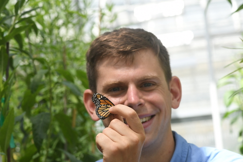

Publications
Click on the paper titles below to access PDFs

Freedman and Dingle (2018)
Animal Migration
Wing morphology in migratory North American monarchs: characterizing sources of variation and understanding changes through timeResearch featured in National Geographic
Freedman, Miller, and Rogers (2018)
Oecologia
Landscape-level bird loss increases the prevalence of honeydew-producing insects and non-native antsFreedman et al. (2018)
Biological Journal of the Linnean Society
Non-migratory monarchs, Danaus plexippus (L.), retain developmental plasticity and a navigational mechanism associated with migration